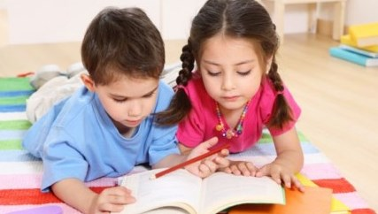
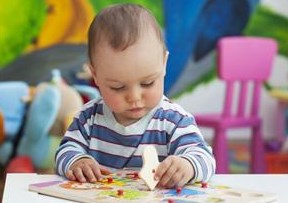

РАЗВИВАШКИ ДЛЯ ДЕТЕЙ
С самого своего рождения малыш развивается, познавая окружающий мир. Важную роль в развитии маленькой личности играет создание особой среды — пространства, наполненного играми и занятиями, которые направлены на получение новых знаний, умений и навыков. Особое значение имеют развивашки — игры, помогающие совершенствовать мелкую моторику, развивающие мышление, творческое воображение, закрепляющие навыки самостоятельного выбора решений. Два главных принципа, которые в них заложены и которые полностью соответствуют методу Монтессори:
- обучение в игре — это последовательный путь от более простого к более сложному;
- обучение с помощью развивашки осуществляется самостоятельно по способностям — решая каждый раз новую задачку, малыш достигает новой «планки» своих возможностей.
ЗАЧЕМ ЖЕ НУЖНЫ ДЕТСКИЕ РАЗВИВАШКИ?
Постараемся разложить обобщенный ответ, который мы дали выше, «по полочкам» — это будет полезным для родителей при создании ими развивающей среды в домашних условиях.
- Всякая новая развивающая игра — и в предметной, и в логической части дает малышу новую «пищу» для ума.
- Занятия такого типа помогают ребенку развиваться комплексно (мелкая моторика, речь, координация движений, логическое мышление, творческое воображение).
- Условия, заданные в развивашке, неизменно опережают развитие способностей малыша. Он как бы поступенчато решает новую задачку.
- Самостоятельно выполняя задания и достигая в очередной раз «потолка» своих возможностей, ребенок развивается наиболее успешно.
- Играя в развивашки с малышом в домашней среде, родители, возможно, того не фиксируя, обучаются сами — терпению, необходимости предоставлять ребенку полную самостоятельность в выборе решений и действий там, где он может и должен сделать это сам. Никакого «менторства» - только общение и наблюдение!
В основе — интерес и естественное стремление ребенка к самообучению
Папам и мамам важно помнить: не следует принуждать ребенка к игре — достаточно задать интересную ему игровую ситуацию, дать «маячок». Развивашек самого разного характера - множество, и если малыш отказывается от одной — предложите ему другую. При этом и по своему характеру такие игры лучше чередовать, не зацикливаясь на схожих и единообразных, даже если они и выстроены по принципу ступенчатости. И, что также важно, — малыш сам задает занятию темп и ритм и сам вправе прекратить его. Не стоит настаивать на продолжении, дабы ребенок не потерял к нему интереса и не выполнял его «через силу».
ВОЗРАСТНЫЕ ОСОБЕННОСТИ РАЗВИТИЯ
В соответствии с программой Монтессори развивающие игры ориентированы на возрастные особенности детей. А они таковы:
- Речевое развитие ребенка начинается и интенсивно продолжается с 0 до 6 лет. В 2-2,5 годика идет динамичное накопление словарного запаса, в 3,5-4 года употребление речи становится полностью осознанным, к 4-4,5 годам он активно использует ее для решения своих проблем, а в 5 лет учится чтению (пониманию чужих мыслей).
- Активное развитие мелкой моторики характерно для периода от 1,5 до 5,5 лет. Она тесно сопряжена с речевым развитием. Ребенок учится манипулировать мелкими предметами, постигает понятия части и целого, развивается его логическое мышление.
- Сенсорика (зрение, слух, обоняние, тактильное восприятие) сензитивно развивается с рождения и до 5,5 лет.
- Восприятие и установление порядка в поведении, во времени, в окружающей среде — от 0 до 3 лет.
- Освоение различных действий, физическое, двигательное развитие осуществляется параллельно с умственным и сенсорным, особенно активный этап - от года до 4 лет.
- Сензитивный период социализации, усвоение форм общения со сверстниками и старшими характерны для возраста от 2,5 до 6 лет.
РАЗВИВАШКИ ПО ВОЗРАСТАМ
Многолетняя практика педагогов Монтессори показывает, насколько эффективны развивашки для общего детского развития, начиная с самого раннего возраста. Приведем лишь отдельные типы развивающих занятий, проводимых в разных возрастных группах. Нужно отметить, что помимо специальных дидактических материалов в качестве игровых элементов выступают самые простые бытовые предметы: крупы, пуговицы, баночки, коробочки, и для занятий дома родителям не составит труда самим подготовить такой материал.
ОТ 1 ГОДА ДО 2 ЛЕТ
В этом возрасте ребенку интересно всё. Идет активнейшее познание мира, малышу нужно всё потрогать и попробовать на вкус. Он увлеченно окунается в занятия и с удовольствием их выполняет. Важно, чтобы развивашки помогали развитию концентрации внимания, мелкой моторики, координации движений. В числе таких занятий:
Рисование на мелкой крупе. «Листом бумаги» становится манка или другая мелкая крупа. На ней можно рисовать пальчиками, оставлять их отпечатки, отпечатки ладошек. Самым активным образом здесь задействована мелкая моторика, что активизирует сразу несколько участков головного мозга, в том числе и отвечающий за речевое развитие. Кроме того, мягко массируются подушечки пальцев, поверхность ладошки. Рисовать можно и кисточкой, палочкой, другими предметами, что позволяет развивать не только тонкую моторику, но и творческое воображение.
Перебирание, раскладывание мелких предметов по чашечкам, баночкам, бутылочкам. Для этого пригодятся пуговицы, фасолинки или, например, кусочки мозаики. И вновь здесь активно проявляет себя мелкая моторика, развивается логическое мышление, ребенок учится сосредоточенности. Только следует внимательно следить за процессом — в этом возрасте малышу интересно попробовать всё на вкус.
Помимо этого, в данном возрастном промежутке ребенок может учиться:
- правильно держать ложку;
- переливать воду из сосуда в сосуд;
- закрывать и открывать молнии, пряжки, липучки, кнопки;
- и многое, многое другое!
РАЗВИВАШКИ В 2 - 3 ГОДА
Примерно к трем годам у малыша наступает пиковый сензитивный период сенсорного развития. Все пять органов чувств как губка впитывают информацию из окружающего мира. Ему уже не просто хочется потрогать предмет, но и понять его «начинку»: как работает щеколда, как открывается замочек или расшнуровывается застежка. Но многие предметы могут таить в себе опасность травмирования. Решение нашла сама Мария Монтессори в далеком 1907 году: именно она изобрела первый бизиборд - «умную доску», на которой собрана всякая полезная всячина, интересная для малыша. Всё можно без опаски потрогать, нажать, покрутить, проверить, «как это работает». С интересом осваивая новый материал, ребенок отлично развивает мелкую моторику, учится логически постигать взаимосвязь процессов. Водопроводный кран, циферблат со стрелками часов, компас, телефонный диск, кнопки переключателя — список предметов можно продолжать до бесконечности.
Сделать такую доску родители могут и самостоятельно. Только следует исключить наличие колющих, острых, режущих предметов и учесть момент, для мальчика или девочки делается «умная доска».
Также можно продолжать, но в более усложненном виде, занятия с переливаниями, пересыпаниями и сортировкой мелких предметов, с прищепками и другими материалами.
РАЗВИВАЮЩИЕ ЗАНЯТИЯ В 3 — 4 ГОДА
Ребенок становится более самостоятельным, происходит активное пополнение словарного запаса. Важные моменты, которые необходимо акцентировать — это упражнения из практической жизни, занятия по развитию речи, подготовка руки к письму.
- Упражнения из практической жизни (уборка, полив цветов, чистка одежды) помогают малышу почувствовать себя независимым и самостоятельным.
- Дальнейшее развитие мелкой моторики для подготовки руки к письму. Постепенно усложняются упражнения на открывание - закрывание всевозможных замочков, на переливания, сортировку мелких предметов, выполняются занятия по вырезанию, вышиванию, штриховке поверхностей.
- Интенсивно осваиваются речевые навыки. Малыш с интересом занимается с карточками для обогащения словарного запаса, включается в игры для развития фонематического слуха и артикуляции, заучивает стихи, скороговорки, потешки.
РАЗВИВАШКИ В 4 — 6 ЛЕТ
В этом возрасте основные навыки из практической жизни уже усвоены. С 4 лет малыш начинает проявлять активный интерес к счету, а также к письменной и устной родной речи.
Для развития письменной речи используются такие занятия, как:
- письмо на манной крупе или песке — так совершенствоваться в написании первых буковок и проще и интереснее;
- составление простых слов с помощью подвижной азбуки;
- использование шероховатых букв для называния звуков;
- письмо на доске мелом;
- штриховка рамок для закрепления навыков.
Чтение. В соответствии с методикой Монтессори педагоги обращаются к нему, только убедившись, что ребенок усвоил звуковое обозначение букв и может складывать из азбуки простые слова. Малыш с интересом включится в такие занятия, как:
- фонематические игры с называнием первой буквы, на которую начинается предмет;
- называние подписей на карточках с различными картинками и коробочках с фигурками;
- прочтение простых заданий и их выполнение;
- чтение простых, в том числе самодельных книжек.
С интересом ребенок воспримет и занятия со счетами, которые будут постепенно усложняться к шести годам. В этот же период он активно осваивает различные техники творчества — в соответствии с методикой Монтессори акцент делается не на создаваемых образах, а именно на техниках, разнообразии используемых материалов и инструментов. И, конечно, все активнее изучается окружающий мир: в космической зоне используются карты, изображения по категориям (животные, страны, города и т. д.), огромный интерес вызывают всевозможные опыты, позволяющие наглядно постигать различные явления. Ребята, уже освоившие навыки письма, могут записывать результаты своих наблюдений или опытов.
ЗНАЧЕНИЕ РАЗВИВАЮЩИХ ЗАНЯТИЙ ПО СИСТЕМЕ МОНТЕССОРИ
В небольшом материале непросто охватить весь спектр возможностей и открытий для малыша, который предлагает программа детского развития Монтессори. Всесторонне развиваясь, ребенок получает навыки практической жизни, через задания, игры и упражнения совершенствуются его сенсорика, речевой аппарат, логическое и творческое мышление.
Однако самое главное, что обретает будущий школьник — внутреннюю независимость, самостоятельность в выборе решений, готовность работать и добиваться результата и самостоятельно находить и исправлять свои ошибки — всё, что необходимо для формирования полноценной личности. Не случайно все перечисленные и другие развивающие Монтессори занятия базируются на ключевом принципе этого направления в педагогике: «Помоги мне сделать это самому».
РАЗВИВАЮЩИЕ ЗАНЯТИЯ В 3 — 4 ГОДА
Ребенок становится более самостоятельным, происходит активное пополнение словарного запаса. Важные моменты, которые необходимо акцентировать — это упражнения из практической жизни, занятия по развитию речи, подготовка руки к письму.
- Упражнения из практической жизни (уборка, полив цветов, чистка одежды) помогают малышу почувствовать себя независимым и самостоятельным.
- Дальнейшее развитие мелкой моторики для подготовки руки к письму. Постепенно усложняются упражнения на открывание - закрывание всевозможных замочков, на переливания, сортировку мелких предметов, выполняются занятия по вырезанию, вышиванию, штриховке поверхностей.
- Интенсивно осваиваются речевые навыки. Малыш с интересом занимается с карточками для обогащения словарного запаса, включается в игры для развития фонематического слуха и артикуляции, заучивает стихи, скороговорки, потешки.
РАЗВИВАЮЩИЕ ЗАНЯТИЯ В 3 — 4 ГОДА
Ребенок становится более самостоятельным, происходит активное пополнение словарного запаса. Важные моменты, которые необходимо акцентировать — это упражнения из практической жизни, занятия по развитию речи, подготовка руки к письму.
- Упражнения из практической жизни (уборка, полив цветов, чистка одежды) помогают малышу почувствовать себя независимым и самостоятельным.
- Дальнейшее развитие мелкой моторики для подготовки руки к письму. Постепенно усложняются упражнения на открывание - закрывание всевозможных замочков, на переливания, сортировку мелких предметов, выполняются занятия по вырезанию, вышиванию, штриховке поверхностей.
- Интенсивно осваиваются речевые навыки. Малыш с интересом занимается с карточками для обогащения словарного запаса, включается в игры для развития фонематического слуха и артикуляции, заучивает стихи, скороговорки, потешки.